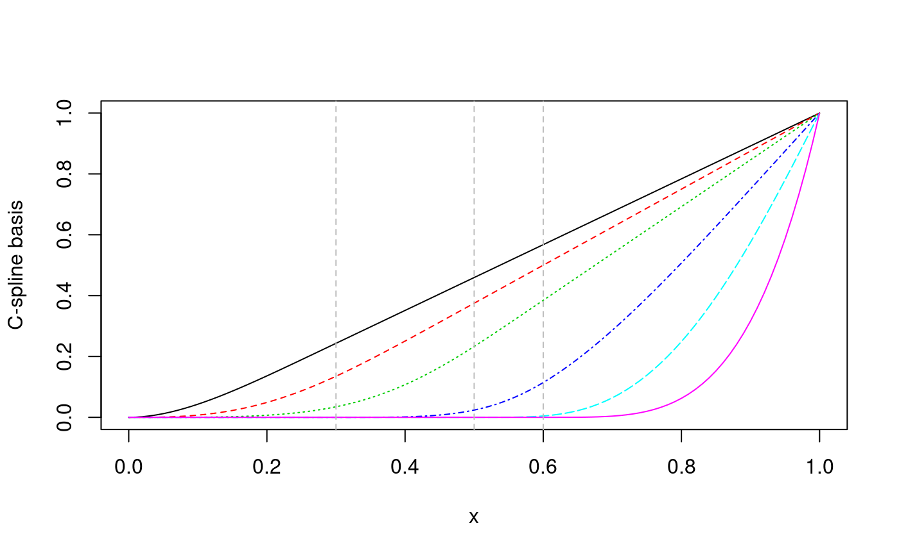
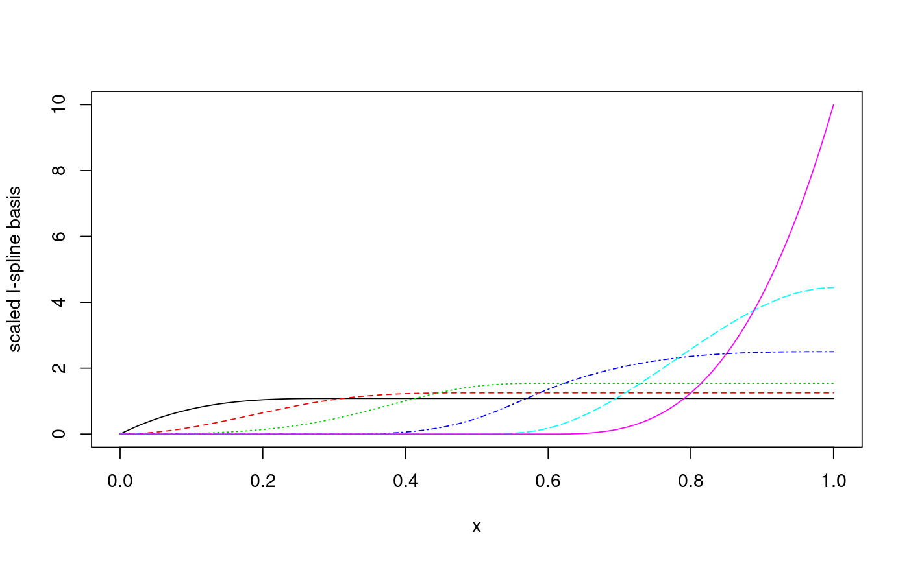
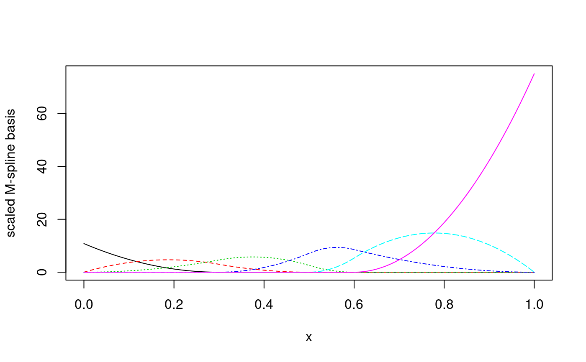

This function generates the convex regression spline (called C-spline) basis matrix by integrating I-spline basis for a polynomial spline.
cSpline(x, df = NULL, knots = NULL, degree = 3L, intercept = FALSE, Boundary.knots = range(x, na.rm = TRUE), scale = TRUE, ...)
| x | The predictor variable. Missing values are allowed and will be returned as they were. |
|---|---|
| df | Degrees of freedom. One can specify |
| knots | The internal breakpoints that define the spline. The default
is |
| degree | Non-negative integer degree of the piecewise polynomial. The default value is 3 for cubic splines. |
| intercept | If |
| Boundary.knots | Boundary points at which to anchor the C-spline basis.
By default, they are the range of the non- |
| scale | Logical value ( |
| ... | Optional arguments for future usage. |
A matrix of dimension length(x) by
df = degree + length(knots) (plus on if intercept is included).
The attributes that correspond to the arguments specified are returned
for the usage of other functions in this package.
It is an implementation of the close form C-spline basis derived from
the recursion formula of I-spline and M-spline. Internally, it calls
iSpline and generates a basis matrix for representing the
family of piecewise polynomials and their corresponding integrals with the
specified interior knots and degree, evaluated at the values of x.
Meyer, M. C. (2008). Inference using shape-restricted regression splines. The Annals of Applied Statistics, 1013--1033. Chicago
predict.cSpline for evaluation at given (new) values;
deriv.cSpline for derivatives;
iSpline for I-splines;
mSpline for M-splines.
library(splines2) x <- seq.int(0, 1, 0.01) knots <- c(0.3, 0.5, 0.6) ### when 'scale = TRUE' (by default) csMat <- cSpline(x, knots = knots, degree = 2, intercept = TRUE) library(graphics) matplot(x, csMat, type = "l", ylab = "C-spline basis")isMat <- deriv(csMat) msMat <- deriv(csMat, derivs = 2) matplot(x, isMat, type = "l", ylab = "scaled I-spline basis")### when 'scale = FALSE' csMat <- cSpline(x, knots = knots, degree = 2, intercept = TRUE, scale = FALSE) ## the corresponding I-splines and M-splines (with same arguments) isMat <- iSpline(x, knots = knots, degree = 2, intercept = TRUE) msMat <- mSpline(x, knots = knots, degree = 2, intercept = TRUE) ## or using deriv methods (much more efficient) isMat1 <- deriv(csMat) msMat1 <- deriv(csMat, derivs = 2) ## equivalent stopifnot(all.equal(isMat, isMat1, check.attributes = FALSE)) stopifnot(all.equal(msMat, msMat1, check.attributes = FALSE))